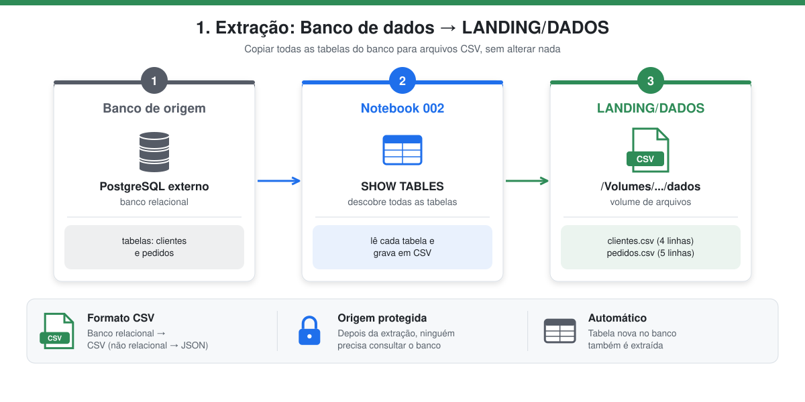
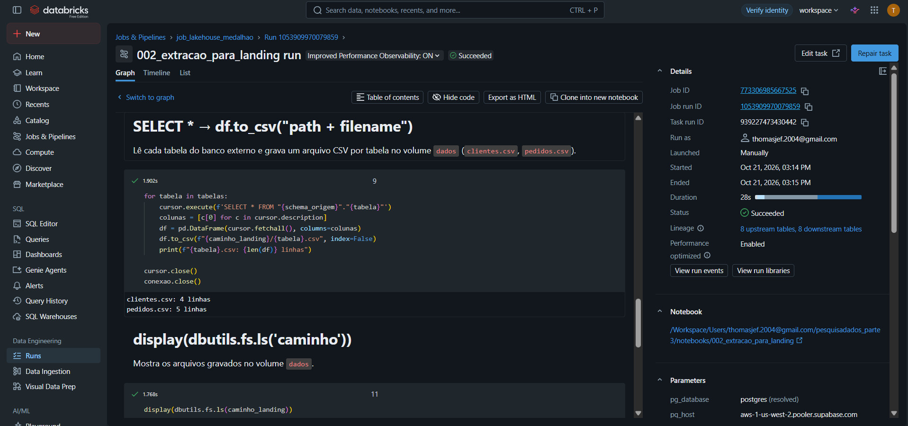

1. Extração → LANDING/DADOS
Notebook: 002_extracao_para_landing

Em poucas palavras: é como tirar uma fotocópia de cada tabela do banco e guardar numa pasta. Nada é alterado: o objetivo é ter uma cópia fiel dos dados, para que o banco da loja não precise ser consultado de novo.
| Condição | O que significa |
|---|---|
| Banco externo | A origem é um PostgreSQL na nuvem, fora do Databricks, acessado pela rede com pg8000. |
| Extrair todas as tabelas | O notebook pergunta ao banco quais tabelas existem (information_schema.tables) e copia todas, sem lista fixa no código. |
| Gravar no schema LANDING/DADOS | Os arquivos ficam no volume dados, dentro do schema landing. |
| Formato CSV | Como o banco é relacional (tabelas com linhas e colunas), o formato pedido é CSV. |
O que é a camada landing
A landing é a "zona de pouso": recebe a cópia bruta dos dados exatamente como saíram da origem, em arquivos. Ela isola o banco de origem do restante do pipeline: depois da extração, nenhuma camada precisa consultar o banco novamente.
Como a origem é um banco relacional, o formato exigido é CSV (para um banco não relacional seria JSON).
Como funciona
- Conecta no PostgreSQL externo com
pg8000(SSL), usando os parâmetros do Job (pg_host,pg_user,pg_password...). A senha não fica no código. - Lista todas as tabelas do schema
publiceminformation_schema.tables. Como a lista vem do próprio banco, uma tabela nova também seria extraída sem mudar o código. - Executa
SELECT *em cada tabela e grava um arquivo<tabela>.csv, com cabeçalho, no volumedadosdo schemalanding.
import pg8000.dbapi
import pandas as pd
conexao = pg8000.dbapi.connect(host=..., port=5432, database="postgres",
user=..., password=..., ssl_context=contexto_ssl, timeout=20)
cursor = conexao.cursor()
cursor.execute("""SELECT table_name FROM information_schema.tables
WHERE table_schema = 'public' AND table_type = 'BASE TABLE'""")
tabelas = [linha[0] for linha in cursor.fetchall()]
for tabela in tabelas:
cursor.execute(f'SELECT * FROM "public"."{tabela}"')
colunas = [c[0] for c in cursor.description]
df = pd.DataFrame(cursor.fetchall(), columns=colunas)
df.to_csv(f"/Volumes/workspace/landing/dados/{tabela}.csv", index=False)
conexao.close()
Resultado
| Arquivo | Linhas | Tamanho |
|---|---|---|
/Volumes/workspace/landing/dados/clientes.csv |
4 | 136 B |
/Volumes/workspace/landing/dados/pedidos.csv |
5 | 282 B |
